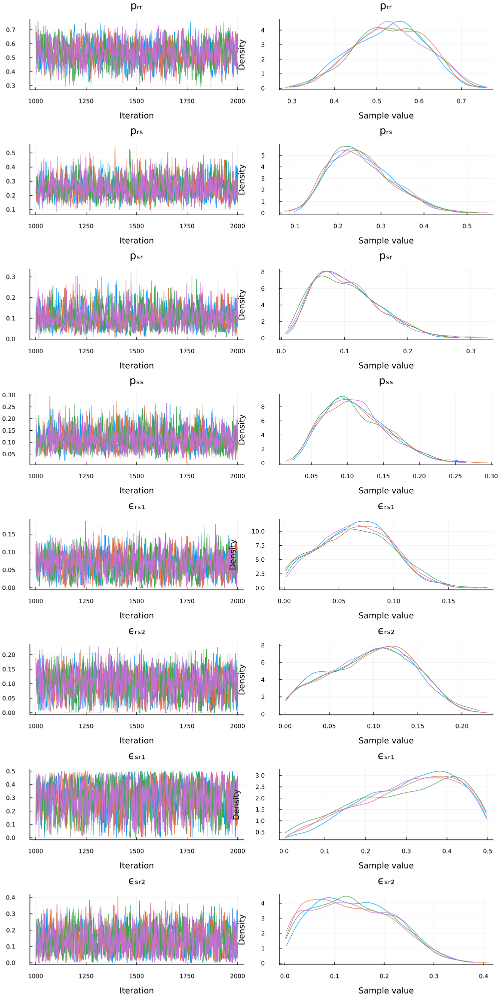

A Simple Turing Model
It is possible to use Turing.jl to perform Bayesian parameter estimation on models defined in SequentialSamplingModels.jl. Below, we show you how to estimate the parameters for the Linear Ballistic Accumulator (LBA) and to use it to estimate effects.
Note that you can easily swap the LBA model from this example for other SSM models simply by changing the names of the parameters.
Load Packages
The first step is to load the required packages. You will need to install each package in your local environment in order to run the code locally. We will also set a random number generator so that the results are reproducible.
using Turing
using TrueAndErrorModels
using Random
using StatsPlots
using Random
Random.seed!(25044)Generate Data
We will use the LBA distribution to simulate data (100 trials) with fixed parameters (those we want to recover only from the data using Bayesian modeling).
# Generate some data with known parameters
dist = TrueErrorModel(; p = [0.60, .30, .05, .05], ϵ = fill(.10, 4))
data = rand(dist, 200)16-element Vector{Int64}:
80
13
8
1
16
35
⋮
8
2
3
9
1
9The rand() function will sample random draws from the distribution, and store that into a named tuple of 2 vectors (one for choice and one for rt). The individual vectors can be accessed by their names using data.choice and data.rt.
Specify Turing Model
The code snippet below defines a model in Turing. The model function accepts a tuple containing a vector of choices and a vector of reaction times. The sampling statements define the prior distributions for each parameter. The non-decision time parameter $\tau$ must be founded by the minimum reaction time, min_rt. The last sampling statement defines the likelihood of the data given the sampled parameter values.
@model function model(data)
p ~ Dirichlet(fill(1, 4))
ϵ ~ filldist(Uniform(0, .5), 4)
data ~ TrueErrorModel(p, ϵ)
endEstimate the Parameters
Finally, we perform parameter estimation with sample(), which takes the model, and details about the sampling algorithm:
model(data): the Turing model with data passedNUTS(1000, .65): a sampler object for the No U-Turn Sampler for 1000 warmup samples.MCMCThreads(): instructs Turing to run each chain on a separate threadn_iterations: the number of iterations performed after warmupn_chains: the number of chains
# Estimate parameters
chains = sample(model(data), NUTS(1000, .65), MCMCThreads(), 1000, 4)Chains MCMC chain (1000×20×4 Array{Float64, 3}):
Iterations = 1001:1:2000
Number of chains = 4
Samples per chain = 1000
Wall duration = 2.11 seconds
Compute duration = 6.21 seconds
parameters = p[1], p[2], p[3], p[4], ϵ[1], ϵ[2], ϵ[3], ϵ[4]
internals = lp, n_steps, is_accept, acceptance_rate, log_density, hamiltonian_energy, hamiltonian_energy_error, max_hamiltonian_energy_error, tree_depth, numerical_error, step_size, nom_step_size
Summary Statistics
parameters mean std mcse ess_bulk ess_tail rhat ess_per_sec
Symbol Float64 Float64 Float64 Float64 Float64 Float64 Float64
p[1] 0.5310 0.0844 0.0021 1611.5020 1931.9193 1.0008 259.5011
p[2] 0.2536 0.0725 0.0017 1882.4309 2316.0608 1.0006 303.1290
p[3] 0.1033 0.0512 0.0013 1520.5778 2258.6363 1.0006 244.8596
p[4] 0.1121 0.0443 0.0010 1999.5107 2448.4595 1.0012 321.9824
ϵ[1] 0.0654 0.0328 0.0008 1521.5648 1140.1998 1.0025 245.0185
ϵ[2] 0.0984 0.0479 0.0011 1750.7039 1641.4243 1.0008 281.9169
ϵ[3] 0.3015 0.1241 0.0030 1641.3979 1858.2680 1.0034 264.3153
ϵ[4] 0.1382 0.0810 0.0019 1744.5089 1863.3155 1.0014 280.9193
Quantiles
parameters 2.5% 25.0% 50.0% 75.0% 97.5%
Symbol Float64 Float64 Float64 Float64 Float64
p[1] 0.3662 0.4706 0.5323 0.5931 0.6851
p[2] 0.1378 0.1994 0.2444 0.2985 0.4119
p[3] 0.0276 0.0635 0.0967 0.1349 0.2171
p[4] 0.0427 0.0793 0.1064 0.1404 0.2091
ϵ[1] 0.0060 0.0410 0.0655 0.0891 0.1292
ϵ[2] 0.0087 0.0622 0.1018 0.1343 0.1841
ϵ[3] 0.0438 0.2090 0.3166 0.4040 0.4880
ϵ[4] 0.0116 0.0714 0.1318 0.1998 0.2997name_map = Dict(
"p[1]" => "pᵣᵣ",
"p[2]" => "pᵣₛ",
"p[3]" => "pₛᵣ",
"p[4]" => "pₛₛ",
"ϵ[1]" => "ϵᵣₛ₁",
"ϵ[2]" => "ϵᵣₛ₂",
"ϵ[3]" => "ϵₛᵣ₁",
"ϵ[4]" => "ϵₛᵣ₂",
)
chains = replacenames(chains, name_map)Posterior Summary
We can compute a description of the posterior distributions.
# Summarize posteriors
summarystats(chains)Summary Statistics
parameters mean std mcse ess_bulk ess_tail rhat ess_per_sec
Symbol Float64 Float64 Float64 Float64 Float64 Float64 Float64
pᵣᵣ 0.5310 0.0844 0.0021 1611.5020 1931.9193 1.0008 259.5011
pᵣₛ 0.2536 0.0725 0.0017 1882.4309 2316.0608 1.0006 303.1290
pₛᵣ 0.1033 0.0512 0.0013 1520.5778 2258.6363 1.0006 244.8596
pₛₛ 0.1121 0.0443 0.0010 1999.5107 2448.4595 1.0012 321.9824
ϵᵣₛ₁ 0.0654 0.0328 0.0008 1521.5648 1140.1998 1.0025 245.0185
ϵᵣₛ₂ 0.0984 0.0479 0.0011 1750.7039 1641.4243 1.0008 281.9169
ϵₛᵣ₁ 0.3015 0.1241 0.0030 1641.3979 1858.2680 1.0034 264.3153
ϵₛᵣ₂ 0.1382 0.0810 0.0019 1744.5089 1863.3155 1.0014 280.9193As you can see, based on the mean values of the posterior distributions, the original parameters (ν=[3.0, 2.0], A = .8, k = .2, τ = .3) are successfully recovered from the data (the accuracy would increase with more data).
Evaluation
It is important to verify that the chains converged. We see that the chains converged according to $\hat{r} \leq 1.05$, and the trace plots below show that the chains look like "hairy caterpillars", which indicates the chains did not get stuck. As expected, the posterior distributions are close to the data generating parameter values.
plot(chains)